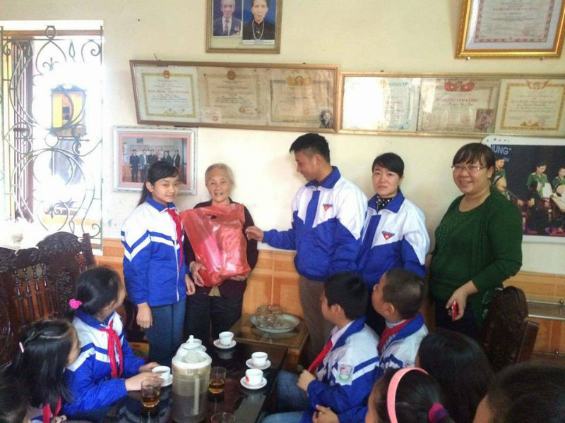
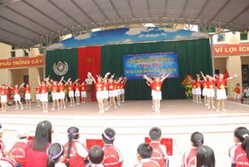
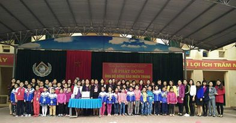

Gương sáng Tổng phụ trách Đội giỏi
Cô Phạm Thùy Dương, Trường Tiểu học Nha Trang, thành phố Thái Nguyên – Tỉnh Thái Nguyên - Một giáo viên, tổng phụ trách đội vui vẻ, gần gũi, năng nổ và nhiệt tình với công tác Đội, luôn được các giáo viên và học sinh trong trường quý mến.

Cô giáo Phạm Thùy Dương và học trò thăm mẹ Việt Nam anh hùng
Tốt nghiệp Trung học Sư Phạm Mĩ thuật năm 2007, Cô Phạm Thùy Dương được phân công về giảng dạy tại Trường Tiểu học Nha Trang cho đến nay. Tại đây, với lòng yêu nghề, tinh thần hăng hái, năng động của tuổi trẻ, cô được Ban giám hiệu Trường giao nhiệm vụ là Giáo viên Tổng phụ trách Đội. cô đã không ngừng phấn đấu đưa công tác Đội và phong trào thanh thiếu nhi của trường ngày một đi lên và giữ vững danh hiệu "Liên đội vững mạnh cấp Tỉnh và xuất sắc cấp tỉnh" trong nhiều năm học qua.
Để thu hút học sinh tham gia nhiệt tình vào các phong trào, hoạt động Đội của nhà trường, trước hết người thầy cần phải quan tâm đến tâm lý học sinh, tránh để các em cảm thấy bắt buộc, gượng ép trong việc tham gia, khi đó chất lượng sẽ cao và điều quan trọng nhất là người Tổng phụ trách Đội phải tiên phong gương mẫu. Chính vì thế, cô luôn sát cánh cùng với học sinh, đội viên, tận tình hướng dẫn, thu hút các em tích cực tham gia các phong trào hoạt động Đội. Đối với những học sinh nhút nhát, thông qua các trò chơi cô thường xuyên hướng các em vào sinh hoạt tập thể, giúp các em mạnh dạn hơn. Bên cạnh đó, cô không ngừng quan tâm động viên học sinh nỗ lực học tập, nhiều em học sinh vươn lên học tốt.
Em Hoàng Thùy Linh, học sinh lớp 5C, trường Tiểu học Nha Trang cho biết: “Em rất thích tham gia vào liên đội nhà trường, được cô Tổng phụ trách dạy chúng em tập Nghi thức, và tổ chức các trò chơi giúp các em rất vui và thoải mái sau những giờ học tập..”

Hội thi Em yêu tổ quốc Việt Nam – Liên hoan dân vũ
9 năm công tác, 9 năm làm tổng phụ trách Đội, cô Dương đã không ngừng tìm tòi, học hỏi kinh nghiệm từ đồng nghiệp, tham khảo các loại tài liệu, sách báo để nâng cao kiến thức, kỹ năng của mình. Trong công tác cô luôn bám sát vào kế hoạch và nhiệm vụ năm học của ngành và ứng dụng nhạy bén những thành quả từ những năm học trước để xây dựng cho bản thân một kế hoạch hoạt động cụ thể. Đặc biệt, sự tham mưu cùng Ban giám hiệu nhà trường, các bộ phận chức năng, các ban ngành, đoàn thể cũng như đội ngũ giáo viên chủ nhiệm lớp học là điều không thể thiếu quyết định sự thành công của phong trào Đội, nhóm của nhà trường.
Cô Dương đã có nhiều sáng kiến trong công tác Đội, ứng dụng có hiệu quả trong thực tế hoạt động Đội, tiêu biểu như mô hình giúp đỡ học sinh nghèo hiếu học. Bình quân mỗi năm học có 06 em học sinh được Liên đội nhận đỡ đầu và được giúp đỡ thường xuyên không chỉ về học tập mà cả về vật chất. Công tác từ thiện giúp đỡ đồng bào Miền trung, Tỉnh Khánh hòa bị thiệt hại do bão lũ hàng năm do Hội đồng đội thành phố triển khai phát động đều hoàn thành ở mức cao trên 20.000.000đ. Đặc biệt là vận động đội viên thực hiện phong trào Kế hoạch nhỏ, Hũ gạo tình thương của liên đội mà thầy và trò Trường Tiểu học Nha Trang đã làm được nhiều việc có ý nghĩa. Hàng năm, từ việc thu gom giấy vụn, ve chai, Liên đội đã góp được số tiền 5-8 triệu đồng. Số tiền này được dùng để thăm hỏi những gia đình thương binh, liệt sĩ; trao học bổng cho học sinh nghèo vượt khó học giỏi. Số tiền tuy không nhiều nhưng với phong trào Kế hoạch nhỏ đã giáo dục cho học sinh tinh thần tiết kiệm, bảo vệ môi trường và hình thành nhân cách sống đẹp, biết hướng đến cộng đồng.

CB-GV-Đội viên thiếu nhi ủng hộ Miền trung khắc phục bão lũ
Cô Phạm Thùy Dương, Trường Tiểu học Nha Trang tâm sự: “Chín năm làm công tác Đội đã giúp tôi rèn luyện rất nhiều, và tôi rất yêu thích công tác này. Vì qua phong trào Đội giúp các em thực hiện nhiều việc ý nghĩa bổ ích, giúp các em có những kỹ năng cần thiết, biết đoàn kết, giúp đỡ lẫn nhau. Tôi cũng phấn đấu nhiều hơn nữa để đưa phong trào Đội ngày càng phát triển hơn nữa…”
Để có thể thành công trên cương vị Tổng phụ trách Đội, Cô Dương phải luôn sáng tạo, nhạy bén tạo ra những cái mới cho phong trào, ứng dụng vào tại liên đội. Thực hiện tốt nhiệm vụ của mình trong vai trò tổng phụ trách Đội nên trong những năm qua Liên đội trường Tiểu học Nha Trang đã đạt các giải thưởng cao và đạt danh hiệu Liên đội vững mạnh và xuất sắc cấp tỉnh nhiều năm liền. 02 năm liền đạt giải nhất, nhì Hội thi Nghi thức Đội cấp thành phố”; 02 năm liền đạt giải nhất, nhì Chỉ huy đội giỏi, Phụ trách Sao giỏi cấp thành phố… năm 2017 liên đội được trung ương Đoàn tặng bằng khen vì có thành tích xuất sắc trong phong trào công tác Đội và thiếu nhi. Cá nhân cô Dương cũng đạt nhiều thành tích cao như: Bằng khen của Trung ương Đoàn do Trung ương Đoàn trao tặng năm 2017; Nhiều năm liền là Giáo viên – tổng phụ trách Đội giỏi cấp thành phố và nhiều bằng khen, giấy khen hoàn thành công tác Đội và phong trào thanh thiếu nhi….
Cô Phạm thị Bích, Hiệu trưởng Trường Tiểu học Nha Trang có nhận xét: “Trong những năm qua phong trào Đội của nhà trường luôn vững mạnh và đạt được kết quả đó có sự đóng góp của cô Dương là đáng ghi nhận, cô rất năng động, nhạy bén và có sự sáng tạo nên phong trào được các em học sinh tích cực tham gia…”
Song song đó, cô Dương còn được Ban giám hiệu nhà trường phân công đảm nhiệm giảng dạy môn Mĩ thuật, dù ở vai trò nào cô đều hoàn thành tốt nhiệm vụ được giao. Đối với đồng nghiệp, cô hòa nhã, hỗ trợ trong công tác chuyên môn cũng như hoạt động các phong trào. Nói về đồng nghiệp của mình, cô Phạm Thị Mến, Giáo viên Trường Tiểu học Nha Trang cho biết: “Cô Dương rất nhiệt tình, có tố chất, nhiệt huyết trong phong trào Đội, đối với nhiệm vụ được giao cô đều hoàn thành tốt, hòa đồng với đồng nghiệp và thường xuyên giúp đỡ học sinh có hoàn cảnh khó khăn….”
Tin chắc rằng, bằng sự nhiệt tình và tâm huyết của mình trong thời gian tới cô Phạm Thùy Dương sẽ đóng góp nhiều hơn nữa vào thành công của phong trào thiếu nhi của nhà trường nói riêng, thành công của phong trào thiếu nhi của tỉnh nhà nói chung.
Bài và ảnh: Minh Thu